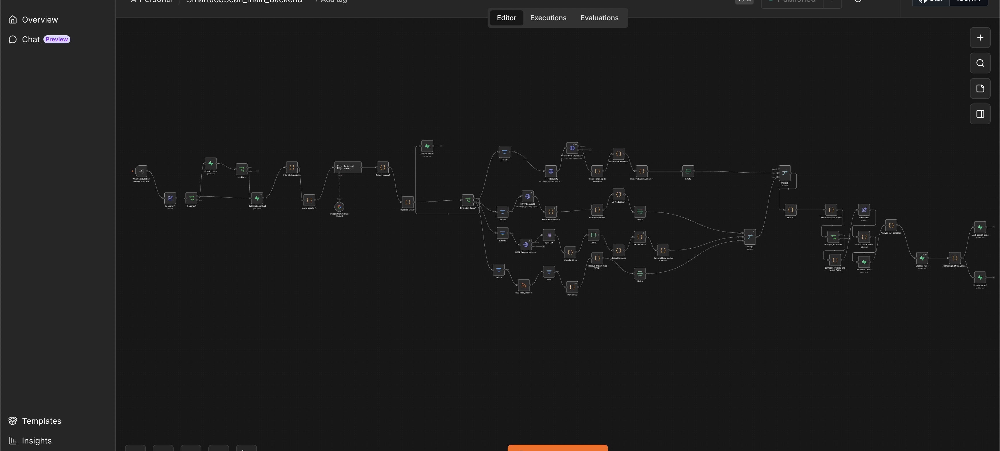
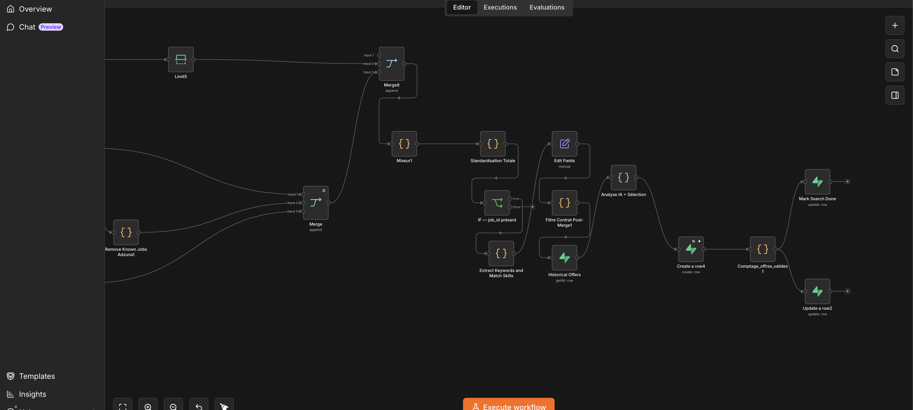
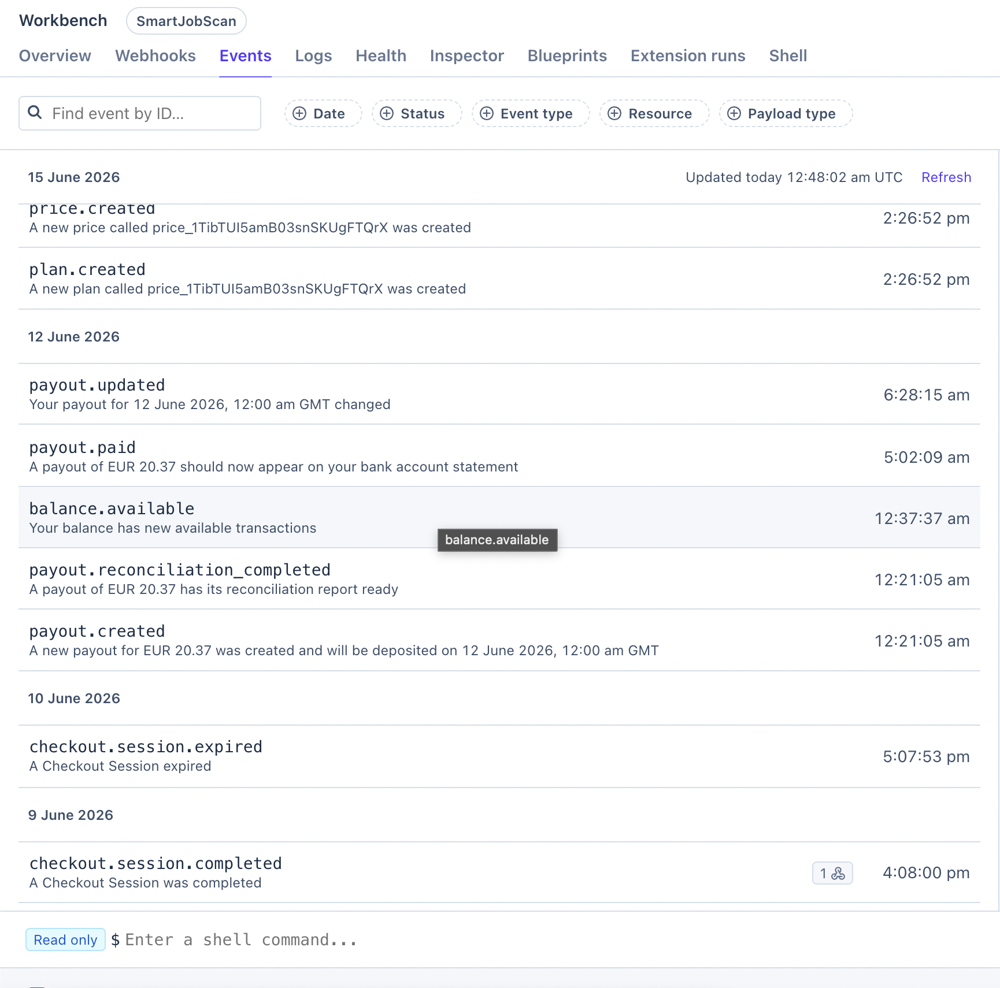
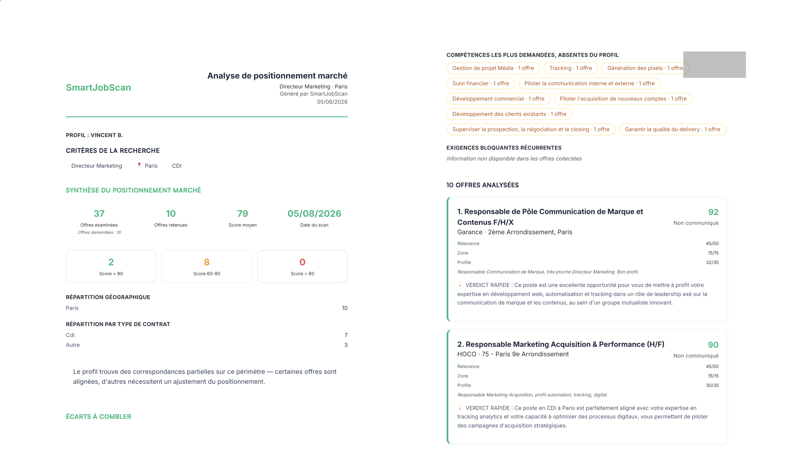

Le problème
Agréger des offres d'emploi venant de quatre API qui ne partagent ni format, ni identifiants, ni qualité de données. Les analyser, les classer, et facturer l'utilisateur au résultat effectivement livré.
Décisions techniques
Déduplication sur le contenu plutôt que sur l'URL
La même offre apparaît sous des adresses différentes selon la source. La clé est construite sur l'intitulé et le nom d'entreprise normalisé, après suppression des formes juridiques, des mentions d'agence et des suffixes. La règle est appliquée à l'identique côté applicatif et par un index d'unicité en base. Les deux doivent coïncider, sinon la même offre est facturée deux fois.
Facturation adossée à l'insertion réelle
Le débit suit le nombre d'insertions réussies, pas le nombre d'offres traitées. Les rejets par contrainte d'unicité sont exclus du décompte. Le débit et la mise à jour de statut sont câblés en parallèle, jamais en série : en série, la seconde branche est silencieusement ignorée si la première échoue.
Contrôle du budget de sortie des modèles
Les modèles de langage facturent la sortie plusieurs fois le prix de l'entrée, et le raisonnement interne compte comme de la sortie. Chaque appel est plafonné, la température fixée par cas d'usage, et le raisonnement désactivé là où il n'apporte rien. Le scoring tourne par lots de douze offres, quatre appels en parallèle, avec reprise bornée sur échec.
Échec visible plutôt qu'invention
Une offre que le modèle n'a pas évaluée n'est jamais livrée avec un score par défaut. Elle est exclue et journalisée. Si tous les lots de scoring échouent, l'exécution s'arrête au lieu de livrer des données douteuses. Livrer une donnée fausse et la facturer coûte plus cher que ne rien livrer.
Collecte multi-sources normalisée
France Travail, Adzuna, Google Jobs et des flux RSS, avec des schémas incompatibles. Normalisation vers un format unique, filtrage géographique par dictionnaire d'agglomérations, exclusion des intitulés hors sujet, puis consolidation avant analyse.
Ce qui tourne
- Paiements Stripe validés de bout en bout en mode live, abonnements et packs à l'unité
- Facturation à l'usage, un crédit débité par résultat livré
- Emails transactionnels avec SPF, DKIM et DMARC configurés et validés
- Front déployé par build statique avec pré-rendu des pages publiques
- Génération de rapports PDF à la marque du client, avec mode anonymisé
En fonctionnement



